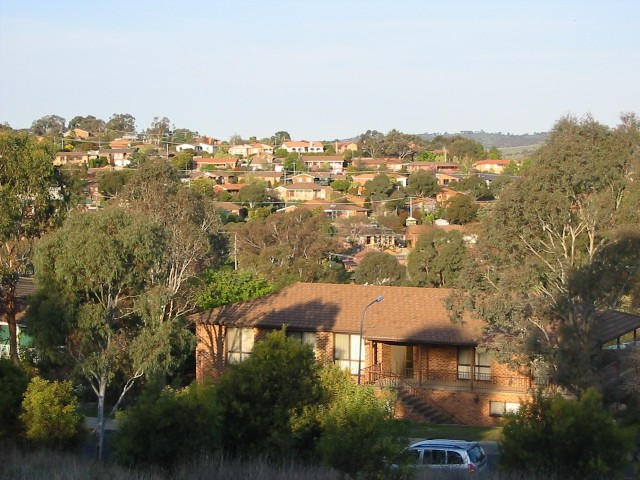

| Type: | Street Circuit | ||
| Used: | 1978-1981 | ||
|
Map of circuit location | ||
Macarthur Park, ACT, Australia
| Type: | Street Circuit | ||
| Used: | 1978-1981 | ||
|
Map of circuit location | ||
Start of Photo Tour below:
The story is partly told on the marker, but there are a couple of other angles that are not mentioned. The reason the suburb was available for so long was that in the mid to late 70s Canberra's population suddenly stopped growing for a while. The government did not react quickly enough, so the suburb-building program got ahead of demand, and there were three or four suburbs out here with nobody to move into them. It was a great place for teaching kids to drive! The bikers cut a deal with the government to put Macarthur at the bottom of the list for settlement, so they had four or five years to run their races. Eventually, however, the demand picked up again and the Government needed Macarthur. It was not a case of people who don't like noise stampeding to build their houses near a circuit. The suburb was intended to be built on from the beginning, and that's why the roads were built. It was a small mercy that some races were able to be run before the inevitable houses arrived.
|| Contents || Coyne [01-06] | Jackie Howe [07-13] | Merriman [14-20] | Carson [21-27] || Home ||

Numbers and arrows on the map represent the location and direction of where
the photographs were taken. Click links above to view photo pages.
Return to racingcircuits.net's Photo Archive Main Index

Macarthur today - a desirable residential area

But close to nature
Photographs and information kindly supplied by Mark Taylor